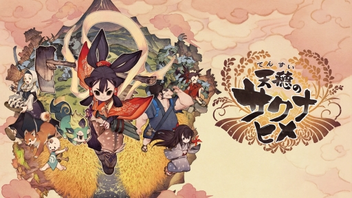

好きなもの紹介 ゲーム
天穂のサクナヒメ

制作
えーでるわいす
えーでるわいす
発売日
２０２０/１１/１２
２０２０/１１/１２
遊べるハード
switch、PS4、PC
switch、PS4、PC
本物に近いガチの稲作ができるゲームと話題になったゲーム。稲作に関するパラメータがたくさんあり、良い米を作ろうとすると苦労する。しかし、ストーリーを進める上でそんなにガチでやる必要はなく、大体いい感じにすればいい。
稲作ばかり話題になったがシュミレーションゲームではなく、和風アクションRPGで２Dアクションである。アクションは敵を吹き飛ばしたり、それをぶつけて巻き込んだりして爽快感がとてもあり、気持ちいい。レベルアップはなく、稲作の米の良し悪しでステータスが伸びる。
ストーリーもよく、最初はギスギスしていた主人公とその周りの人間達が、協力して生活していくうちにお互いを尊重していく様が描かれていて、終盤になると成長したなと感慨深い感情になれる。ぐうたらして怠惰の極みだった主人公が成長していく様は見物。
稲作ばかり話題になったがシュミレーションゲームではなく、和風アクションRPGで２Dアクションである。アクションは敵を吹き飛ばしたり、それをぶつけて巻き込んだりして爽快感がとてもあり、気持ちいい。レベルアップはなく、稲作の米の良し悪しでステータスが伸びる。
ストーリーもよく、最初はギスギスしていた主人公とその周りの人間達が、協力して生活していくうちにお互いを尊重していく様が描かれていて、終盤になると成長したなと感慨深い感情になれる。ぐうたらして怠惰の極みだった主人公が成長していく様は見物。
スプラトゥーン２

制作
任天堂
任天堂
発売日
２０１７/７/２１
２０１７/７/２１
遊べるハード
switch
switch
大人気になったスプラトゥーンの二作目。4vs4のオンラインバトル。三分間インクで陣地を広げ、最終的に塗った面積が多いほうが勝ちのレギュラーマッチと、前作から１つルールが増え計４つになったガチマッチがある。
共通だったガチマッチのウデマエ(ランクみたいなもの)がルールごとになったり,新しいタイプのブキが増えたりと他にも色々改良がされた。また、サーモンランという協力プレイができるルールも増えた。
しかし、スペシャル(必殺技みたいなもの)が全て一新されたが、前作と比べて戦況を打開したり覆したりできるほど強力なものはあまりなく不評もあった。ガチマッチでウデマエを昇格するためには前作では、ポイント制で負けてもなかなか下がらなかったが、２では一定回数負けて一定ラインを越えてなかったら落とされ、超えててもゲージが0になるというなかなか厳しいものになった。
共通だったガチマッチのウデマエ(ランクみたいなもの)がルールごとになったり,新しいタイプのブキが増えたりと他にも色々改良がされた。また、サーモンランという協力プレイができるルールも増えた。
しかし、スペシャル(必殺技みたいなもの)が全て一新されたが、前作と比べて戦況を打開したり覆したりできるほど強力なものはあまりなく不評もあった。ガチマッチでウデマエを昇格するためには前作では、ポイント制で負けてもなかなか下がらなかったが、２では一定回数負けて一定ラインを越えてなかったら落とされ、超えててもゲージが0になるというなかなか厳しいものになった。
アークナイツ
制作
Hypergryph
Hypergryph
配信日(日本版)
２０２０/１/１６
２０２０/１/１６
遊べるハード
スマホ
スマホ
暗い世界観と設定が特徴的なゲーム。スマホアプリで無料で気軽に始められる。ジャンルはタワーディフェンス。プレイヤーはドクターとなり、ロドスと呼ばれる表向きは製薬会社の組織の指揮をしていく。
源石(オリジニウム)と呼ばれる莫大なエネルギーを持つ鉱石があり、資源でもあるが長期間源石やその加工品に接触していると、鉱石病(オリパシー)と呼ばれる不治の病に感染しやがて死ぬ。感染したものは感染者と呼ばれ、感染者は死後新たな感染源となるため迫害されている。そんな感染者を保護するため、ロドスは行動する。
また、レユニオンと呼ばれる感染者が集まった組織があり、武力で迫害してきた者たちへ復讐のため行動する。ロドスと対立する。
キャラクター一人一人に背景があり、低レアなキャラでも上手く配置すれば攻略できる絶妙な難易度で癖になる。
源石(オリジニウム)と呼ばれる莫大なエネルギーを持つ鉱石があり、資源でもあるが長期間源石やその加工品に接触していると、鉱石病(オリパシー)と呼ばれる不治の病に感染しやがて死ぬ。感染したものは感染者と呼ばれ、感染者は死後新たな感染源となるため迫害されている。そんな感染者を保護するため、ロドスは行動する。
また、レユニオンと呼ばれる感染者が集まった組織があり、武力で迫害してきた者たちへ復讐のため行動する。ロドスと対立する。
キャラクター一人一人に背景があり、低レアなキャラでも上手く配置すれば攻略できる絶妙な難易度で癖になる。
作成者：e204210ot 大石宜昭